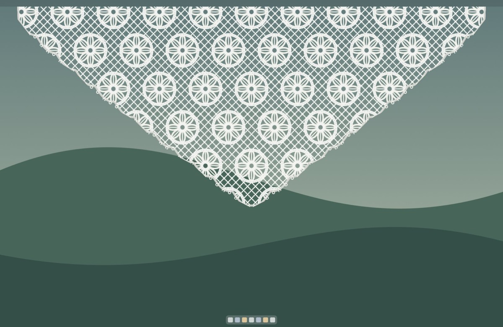
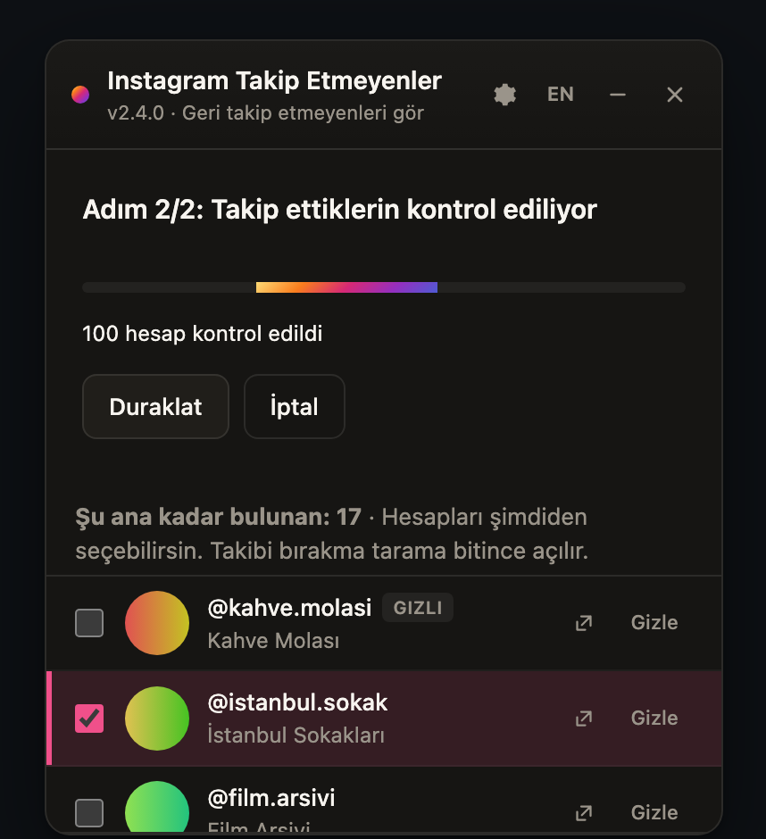

See who does not follow you backSeni geri takip etmeyenleri gör
19 October 202619 Ekim 2026 Working again!Yeniden çalışıyor!
It scans the accounts you follow and lists the ones that do not follow back. Your data never leaves the browser.
Takip ettiğin hesapları tarar, geri takip etmeyenleri listeler. Veri tarayıcından çıkmaz.

Dantel
A little lace for your MacMac'ine biraz dantel
It drapes crochet lace over the top of your screen. Lift it and you are back to work. One payment, no subscription.
Ekranının üstüne tığ işi dantel serer. Kaldırınca işine dönersin. Tek seferlik ödeme, abonelik yok.
Support it or advertise hereDestek ol ya da reklam ver
It stays free thanks to your support. Want your brand in front of these people? Write to me.
Ücretsiz kalması senin desteğinle mümkün. Markanı bu kitleye göstermek istersen yaz.
Supporters are listed here.
Destek olanlar burada listelenir.
How to use itNasıl kullanılır
On a computer, in Chrome. It takes a minute.
Bilgisayarda, Chrome'da. Bir dakika sürer.
Do not unfollow too many people at once. Instagram may restrict your account for a few hours.
Tek seferde çok fazla kişiyi takipten çıkarma. Instagram hesabını birkaç saat kısıtlayabilir.
-
Open InstagramInstagram'ı aç
Go to instagram.com in Chrome and sign in.
Chrome'da instagram.com'a gir ve hesabına giriş yap.
-
Copy the codeKodu kopyala
Press this button:
Bu butona bas:
-
Open the consoleKonsolu aç
On the Instagram tab, press Ctrl+Shift+J. On a Mac: ⌘+⌥+J.
Instagram sekmesindeyken Ctrl+Shift+J'ye bas. Mac'te: ⌘+⌥+J.
-
Paste and press EnterYapıştır, Enter'a bas
If Chrome refuses the paste, type allow pasting, press Enter, then paste again.
Chrome yapıştırmaya izin vermezse allow pasting yaz, Enter'a bas, sonra tekrar yapıştır.
-
Press "Scan now""Taramayı başlat"a bas
Non-followers appear in the panel. Pick the ones you want and press Unfollow.
Takip etmeyenler panelde listelenir. İstediklerini seç, "Takibi bırak"a bas.

How it worksNasıl çalışır
Everything happens in your own Instagram tab, with the session already open. Nothing is sent to us or anywhere else.
Her şey kendi Instagram sekmende, açık oturumunla olur. Hiçbir şey bize ya da başka bir yere gönderilmez.
-
It reads two numbersİki sayıyı okur
Your follower count and the number of accounts you follow, from your profile. One request.
Profilinden takipçi sayını ve takip ettiğin hesap sayısını alır. Tek istek.
-
It picks the cheaper wayUcuz yolu seçer
Instagram hands out followers 25 a page. If you follow fewer accounts than that list has pages, the panel asks Instagram about each account you follow. Otherwise it loads your followers and compares the two lists. With 30,000 followers and 800 followed, that is 800 questions instead of 1,200 pages.
Instagram takipçileri sayfa başına 25 kişi verir. Takip ettiğin hesap sayısı bu listenin sayfa sayısından azsa panel takip ettiğin her hesabı Instagram'a tek tek sorar. Değilse takipçilerini yükleyip iki listeyi karşılaştırır. 30.000 takipçi ve 800 takiple bu, 1.200 sayfa yerine 800 soru demek.
-
It shows what it finds right awayBulduğunu hemen gösterir
Non-followers appear as they are confirmed. If Instagram cuts the scan short, progress is kept for a day and Resume continues where it stopped.
Takip etmeyenler kesinleştikçe listede belirir. Instagram taramayı keserse ilerleme bir gün saklanır, Devam et kaldığı yerden sürer.
-
It unfollows slowlyTakibi yavaşça bırakır
One account every few seconds, with a five-minute break every five. Each unfollow is confirmed with Instagram, and the run stops at the first sign of a block.
Birkaç saniyede bir hesap, her beş hesapta beş dakika mola. Her biri Instagram'dan doğrulanır, engelin ilk işaretinde iş durur.
-
Or it skips the scanYa da taramayı atlar
Unfollow from a list in the panel takes usernames you paste, for example from your Instagram data file, and unfollows them the same slow way. Each one is looked up among the people you follow first.
Paneldeki Listeden takibi bırak, yapıştırdığın kullanıcı adlarını (örneğin Instagram veri dosyandan) alır ve aynı yavaşlıkta takibi bırakır. Her biri önce takip ettiklerin arasında aranır.
LimitsSınırlar
Instagram decides how much it answers. The panel stops when Instagram says stop.
Ne kadar cevap vereceğine Instagram karar verir. Panel, Instagram dur dediğinde durur.
-
Large accounts get cut offBüyük hesaplar yarıda kesilebilir
Instagram tends to stop a scan after a few hundred requests. The panel then pauses and names a time to resume, one to three hours later. Trying sooner makes it last longer: one user could not open their follower list in the app until the next day.
Instagram genelde birkaç yüz istekten sonra taramayı keser. Panel o zaman durur ve devam etmek için bir saat verir, bir ile üç saat sonrası. Erken denemek kısıtlamayı uzatır: bir kullanıcı ertesi güne kadar uygulamada takipçi listesini açamadı.
-
For the biggest accounts, use the data fileEn büyük hesaplar için veri dosyası
If you have many followers and also follow many accounts, a scan can take several sittings. The data file method gives an exact list at once, with no requests at all; paste it into Unfollow from a list.
Hem takipçin hem takip ettiğin çoksa tarama birkaç oturuma yayılabilir. Veri dosyası yöntemi hiç istek atmadan, tek seferde kesin liste verir; onu Listeden takibi bırak'a yapıştır.
-
Unfollowing has a limit tooTakip bırakmanın da sınırı var
Instagram blocks too many unfollows in a row. When it does, the panel stops and skips the rest; wait a few hours before going on.
Instagram art arda çok takip bırakmayı engeller. Engellerse panel durur ve kalanları atlar; devam etmeden önce birkaç saat bekle.
-
A gap turns unfollowing offEksik liste takip bırakmayı kapatır
If Instagram leaves pages of your follower list empty, someone who follows you could show up as a non-follower. That scan's results stay visible, but unfollowing is off.
Instagram takipçi listende boş sayfalar bırakırsa seni takip eden biri takip etmiyor görünebilir. O taramanın sonuçları görünür kalır ama takibi bırakma kapanır.
-
It can break when Instagram changesInstagram değişince bozulabilir
The panel uses the same addresses instagram.com uses. When Instagram changes them, it may not work until it is updated.
Panel, instagram.com'un kendi kullandığı adresleri kullanır. Instagram bunları değiştirince güncellenene kadar çalışmayabilir.